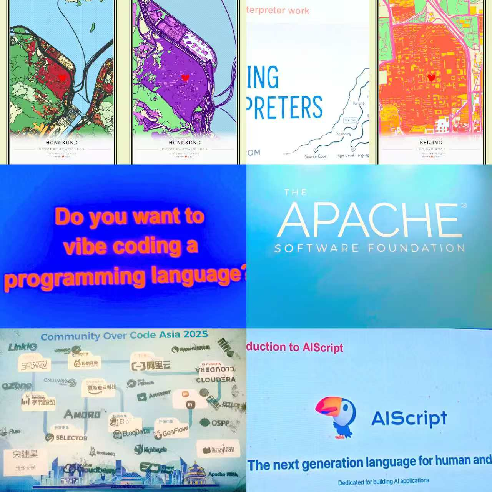

Programmer & Creator

|
NYU Teaching Assistant
Life Experience
2024.10 ~ 2025.01
I hope to practice my ability to use English to communicate in the field of CST, feel the teaching atmosphere of an English university, and try more diversified cultural collisions. Therefore, I applied to be a teaching assistant in the Computer Science, Data Science, and Engineering Department of New York University Shanghai for one semester, which was a fulfilling experience. |

|
Human Resource Machine
Programming Game
2022.11 ~ 2023.1
I led the team to use C++ to reimplement the programming puzzle game Human Resource Machine developed by Tomorrow Corporation. In this game, players need to input code to control a robot to complete specified tasks, which effectively trains programming thinking without requiring knowledge of any specific programming language,as the game uses its own easy-to-understand code format. Additionally, our game emphasizes code optimization, encouraging players to use the simplest and most efficient code to achieve functionality. |
|
|
Gravity Connect Four
Blog
2023.05 ~ 2023.07
I utilized the Upper Confidence Bound (UCB) algorithm with Monte Carlo Tree Search (MCTS) to implement the Upper Confidence Trees (UCT) algorithm for simulating Gravity Connect Four. This combination allowed the AI to make informed decisions, balancing exploration and exploitation. Numerous simulations helped the AI improve its strategy over time. Testing showed remarkable results, with the AI achieving a 99.9% win rate against human opponents, demonstrating the UCT algorithm's robustness. In 100 test games against various chess algorithms, the AI secured 97 victories, showcasing its adaptability across different strategies. |

|
RISC-V Pipelined CPU with the SystemVerilog language
Blog
2024.11 ~ 2024.12
I led a team in designing and implementing a RISC-V pipelined CPU using SystemVerilog on the Vivado platform. The CPU features a five-stage pipeline for efficient instruction execution. Our design includes robust support for interrupts and exception handling, enabling effective management of unexpected events and errors. It also supports virtual address translation with an integrated Memory Management Unit (MMU), allowing for advanced memory management. We implemented a level-1 cache system, consisting of both Instruction Cache and Data Cache, to improve memory access speed and performance. Additionally, the design includes a VGA controller for image display, supporting multimedia output in real-time applications. This project highlights our team's ability to integrate key hardware components to optimize functionality and performance. |

|
MiniGLM
Life Experience
2023.9 ~ 2023.10
In this project, we developed a MiniGPT model utilizing a transformer architecture. By leveraging the rich narratives of Jin Yong's wuxia novels, we aimed to capture the essence of these stories. We constructed specific Q/A pairs to pretrain and fine-tune the model, ensuring it could accurately respond to questions about Jin Yong's novels. This approach not only improved the model's comprehension but also enhanced its ability to generate precise answers related to the themes and characters of these iconic works. |

|
undefined-OS
Programming Game
2025.3 ~ 2025.8
I led the team to use Rust to help in developing the Starry OS. Starry OS is a Linux-compatible, Rust-written monolithic kernel based on ArceOS, featuring cross-platform support (x86_64, riscv64, aarch64, loongarch64), memory and thread safety, standard POSIX interfaces, and fine-grained kernel components reusable in other kernels. |

|
LLM (Large Language Model) LCA (Life Cycle Assessment) carbon footprint
measurement and carbon reduction strategies
Blog
2023.9 ~ 2024.01
I led a team to evaluate the LCA carbon footprint of LLMs and propose corresponding carbon reduction strategies. Our calculation formula combines the Scaling Law and the FLOP model and takes into account both the operational and embodied footprints. Our findings indicate that sparse Mixture of Experts (MoE) architectures (to decompose a large model into multiple smaller models (experts), with a gating network deciding which experts to activate for each input sample) and the use of specialized ML hardware, such as energy-efficient TPUs (Tensor Processing Unit) and NPUs (Neural Processing Unit) instead of GPUs, can significantly reduce carbon emissions while maintaining performance metrics. |
Pathfinder & Explorer

Community Over Code Asia 2025

ByteDance Trae SOLO Hackathon 2025

World Robot Conference 2025